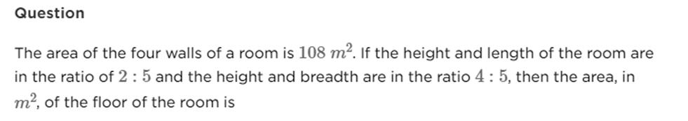

The length, width, and height ratio of a cuboid is 7:5:4 and its entire surface area is 2656 square cm.
Find its width ?
Find the total surface area (in cm2) of a right circular cylinder of diameter 7 cm and height 6 cm.
The length and breadth ratio of an auditorium is 3: 2. If the roof area is 216 square meters and the area of the four walls is 480 square
meters, then what will be the height of the auditorium?

Three spherical balls of radius 2 cm, 4 cm and 6 cm are melted to form a new spherical ball. In this process there is a loss of 25% of the material. What is the radius (in cm) of the new ball?
A cylindrical rod of radius 30 cm and length 40 cm is melted and made into spherical balls of radius 1 cm. The number of spherical balls is.
A solid cone of height 24 cm and radius of its base 8 cm is melted to form a solid cylinder of radius 6 cm and height 6 cm. In the whole process what percent of material is wasted?
The sum of the length, width and height of a cuboid x cm and the length of its diagonal is y cm, then its total surface area will be-
A sphere of diameter 5cm is dropped into a cylindrical vessel partly filled with water. The diameter of the base of the vessel is 10cm . If the sphere is completely submerged, by how much will the level of water rise?